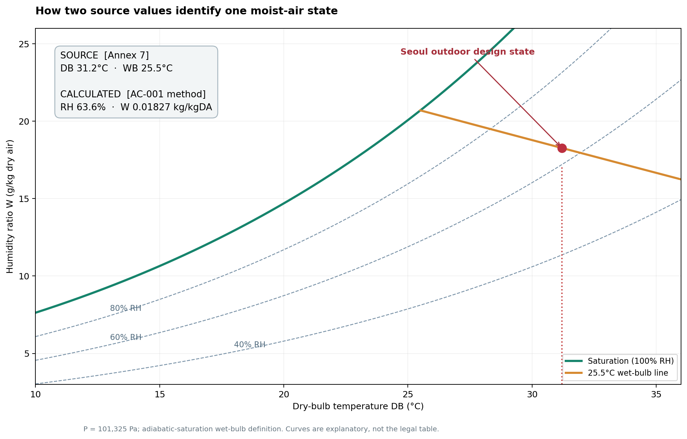
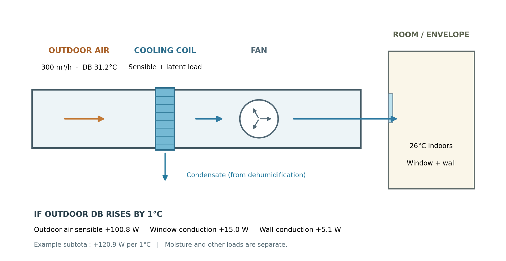

후배 설계자가 냉방부하 계산서를 들고 와서 이렇게 묻는다고 해볼게요. “서울 외기온도는 왜 31.2℃로 넣었나요? 여름에 35℃가 넘는 날도 있는데요.” 좋은 질문입니다. 표에 있는 숫자를 옮겨 적는 일보다, 그 숫자를 왜 골랐는지 설명하는 일이 설계에서는 더 중요하니까요.
오늘은 이 질문에서 출발해 국내 외기조건을 정하는 세 가지 방법, 제가 [별표 7]을 기본으로 고른 이유, 표에 직접 적힌 값과 따로 계산한 값을 구별하는 방법까지 같이 살펴보겠습니다. 마지막에는 계산서에 옮길 때 무엇을 확인해야 하는지도 짚어볼게요.
먼저 결론부터 말씀드릴게요
저는 국내 일반 프로젝트에서 「건축물의 에너지절약설계기준」 [별표 7]의 지역별 외기조건을 기본으로 사용합니다. 여름에는 건구온도(DB)와 습구온도(WB), 겨울에는 건구온도(DB)와 상대습도(RH)가 표에 직접 적힌 값입니다. 여름 RH와 수분비, 겨울 WB와 수분비는 그 값에서 따로 계산한 값입니다.
제가 확인한 고시 판은 [시행 2026. 7. 8.] [국토교통부고시 제2026-360호]입니다. 프로젝트를 시작할 때는 적용할 판과 발주처 요구조건을 다시 확인합니다. 해외 현장에는 국내 [별표 7]을 그대로 쓰지 않습니다.
DB·WB·RH·수분비, 네 가지만 알고 시작해도 됩니다
- DB, 건구온도: 평소 온도계로 말하는 공기온도입니다. 실내외 온도차를 만드는 기본값입니다.
- WB, 습구온도: DB와 함께 공기의 수분상태를 읽을 때 쓰는 온도입니다. 같은 DB라도 WB가 다르면 공기의 수분상태가 달라질 수 있습니다.
- RH, 상대습도: 해당 온도에서의 포화상태와 비교한 수증기압의 비율입니다. 수분량이 같아도 온도가 바뀌면 RH가 변합니다.
- 수분비 W, kg/kgDA: 건공기 1kg에 섞인 수증기의 질량입니다. 제 기준서 표에는 관행적으로 ‘절대습도’라고 적혀 있지만, 단위가 kg/kgDA인 이 값의 엄밀한 이름은 humidity ratio입니다.
이 네 단어가 한꺼번에 나오면 막막할 수 있습니다. 우선 공조기 입구의 공기를 떠올려보세요. DB는 얼마나 식혀야 하는지, DB와 WB의 조합은 얼마나 습한 공기인지를 읽는 출발점입니다. 코일은 공기의 온도를 낮추면서 필요하면 수분도 제거하므로, 여름 외기를 DB 하나만으로 판단할 수 없습니다.
아래 그림에서 빨간 점을 찾아보세요. 서울의 DB 31.2℃와 WB 25.5℃를 AC-001의 계산조건에 놓아보면, 같은 상태점에서 RH와 수분비를 읽거나 계산할 수 있습니다. 앞의 두 숫자는 고시 원문, 뒤의 두 숫자는 계산 결과라는 점이 핵심입니다.

왜 그해 가장 더운 날을 기준으로 삼지 않을까요?
여름에는 매우 더운 날도 있지만, 그런 날씨가 일 년 내내 계속되지는 않습니다. 역대 최고온도를 그대로 입력하면 드문 날을 위해 장비가 필요 이상으로 커질 수 있습니다. 설계에서는 온도가 나타난 시간의 분포를 보고 극단적인 일부 시간을 제외하는 방법을 씁니다. 이때 제외하는 비율을 위험률이라고 부릅니다.
고시 제8조제1호에서 제시하는 경로는 세 가지입니다.
- 냉방기간과 난방기간의 분포를 따로 만들어 각각 위험률 2.5%를 적용합니다. 어떤 달을 냉방기간으로 볼지는 사용하는 기상자료와 산정기준에 맞춰 정해야 합니다.
- 연간 총시간의 분포를 사용해 위험률 1%를 적용합니다. 평년 8,760시간을 예로 들면 한쪽 극단의 약 87.6시간에 해당하는 비율입니다.
- 고시가 미리 제시한 지역별 외기 온·습도인 [별표 7]을 사용합니다.
여기서 2.5%와 1%를 숫자만 보고 바꿔 읽으면 곤란합니다. 전자는 냉방·난방기간 각각의 시간을, 후자는 연간 시간을 분모로 삼습니다.
원문 확인: [국가법령정보센터 「건축물의 에너지절약설계기준」 제8조제1호·[별표 7]](https://law.go.kr/LSW/admRulLsInfoP.do?admRulId=2036618&admRulNm=%EA%B1%B4%EC%B6%95%EB%AC%BC%EC%9D%98+%EC%97%90%EB%84%88%EC%A7%80%EC%A0%88%EC%95%BD%EC%84%A4%EA%B3%84%EA%B8%B0%EC%A4%80). 2026년 10월 4일 확인, 고시 제2026-360호.
저는 왜 [별표 7]을 기본으로 골랐을까요?
기상자료를 직접 분석하면 대상지의 특성을 세밀하게 살펴볼 수 있습니다. 다만 관측지점, 자료기간, 냉·난방기간, 위험률 산정방법을 정하고 기록해야 합니다.
일반 프로젝트에서는 먼저 값을 다시 확인할 수 있는가를 생각합니다. [별표 7]을 쓰면 같은 지역을 맡은 다른 설계자도 출발점을 확인할 수 있고, 설계기준서와 부하계산서, 에너지절약 관련 성과품의 적용값을 맞추기 쉽습니다. 발주처가 숫자의 근거를 물어도 설명 경로가 분명합니다. 이 재현성과 추적성 때문에 기본값으로 채택했습니다.
대신 17개 대표지역의 값이 모든 현장 기후를 세밀하게 담지는 못합니다. 고지대·도서·분지나 해안과 내륙의 차이가 큰 현장은 별도 검토합니다. 발주처가 다른 자료를 지정했거나 [별표 7]이 현장을 대표하기 어렵다면 직접산정과 현장별 조건을 살펴봅니다.
17개 지역의 외기조건
이제 실제 숫자를 보겠습니다. 아래는 AC-001에 채택한 17개 지역 값입니다. 처음부터 여덟 열을 모두 외울 필요는 없습니다. 굵은 네 열(여름 DB·WB, 겨울 DB·RH)이 [별표 7] 원문이고, 다른 네 열은 계산값이라는 구분부터 해보세요. 온도는 ℃, RH는 %, 수분비는 kg/kgDA입니다.
| 지역 | 여름 DB | 여름 WB | 여름 RH | 여름 수분비 | 겨울 DB | 겨울 WB | 겨울 RH | 겨울 수분비 |
|---|---|---|---|---|---|---|---|---|
| 서울 | 31.2 | 25.5 | 63.6 | 0.01827 | -11.3 | -12.3 | 63 | 0.00090 |
| 인천 | 30.1 | 25.0 | 66.4 | 0.01790 | -10.4 | -11.6 | 58 | 0.00089 |
| 수원 | 31.2 | 25.5 | 63.6 | 0.01827 | -12.4 | -13.2 | 70 | 0.00090 |
| 춘천 | 31.6 | 25.2 | 60.0 | 0.01760 | -14.7 | -15.2 | 77 | 0.00080 |
| 강릉 | 31.6 | 25.1 | 59.4 | 0.01743 | -7.9 | -9.9 | 42 | 0.00081 |
| 대전 | 32.3 | 25.5 | 58.3 | 0.01780 | -10.3 | -11.1 | 71 | 0.00110 |
| 청주 | 32.5 | 25.8 | 59.0 | 0.01823 | -12.1 | -12.7 | 76 | 0.00101 |
| 전주 | 32.4 | 25.8 | 59.5 | 0.01827 | -8.7 | -9.6 | 72 | 0.00129 |
| 서산 | 31.1 | 25.8 | 65.9 | 0.01882 | -9.6 | -10.3 | 78 | 0.00129 |
| 광주 | 31.8 | 26.0 | 63.5 | 0.01887 | -6.6 | -7.7 | 70 | 0.00151 |
| 대구 | 33.3 | 25.8 | 55.4 | 0.01789 | -7.6 | -9.0 | 61 | 0.00120 |
| 부산 | 30.7 | 26.2 | 70.4 | 0.01968 | -5.3 | -7.5 | 46 | 0.00111 |
| 진주 | 31.6 | 26.3 | 66.2 | 0.01947 | -8.4 | -9.2 | 76 | 0.00140 |
| 울산 | 32.2 | 26.8 | 66.0 | 0.02010 | -7.0 | -8.1 | 70 | 0.00146 |
| 포항 | 32.5 | 26.0 | 60.1 | 0.01857 | -6.4 | -8.7 | 41 | 0.00090 |
| 목포 | 31.1 | 26.3 | 68.8 | 0.01969 | -4.7 | -5.7 | 75 | 0.00190 |
| 제주 | 30.9 | 26.3 | 69.9 | 0.01977 | 0.1 | -1.5 | 70 | 0.00266 |
서울 행을 같이 읽어보겠습니다. 여름 31.2℃ DB / 25.5℃ WB는 고시 표에서 확인합니다. 그 옆의 63.6% RH / 0.01827 kg/kgDA는 AC-001의 계산조건으로 구한 값입니다. 숫자가 같은 줄에 있다고 출처까지 같은 것은 아닙니다. 계산서에 이 네 숫자를 적을 때도 원문값과 계산값을 나눠 표시해야 다음 사람이 검토할 수 있습니다.
표에 없는 지역이면 어디를 고를까요?
지도에서 제일 가까운 도시를 고르는 것으로 끝내지 않습니다. [별표 7]에 없는 지역에는 기후조건이 가장 유사한 수록지역의 값을 적용합니다. 표고, 해안·내륙, 분지 여부를 보면서 이유를 기록합니다. 고시는 유사성을 판단하는 단일 수치까지 정해주지는 않습니다. 그래서 ‘어느 도시를 골랐는지’와 ‘왜 골랐는지’를 한 쌍으로 남겨야 합니다.
원문에 없는 습도값은 어떻게 얻었을까요?
여름에는 고시의 DB·WB를 출발점으로 RH와 수분비를 계산합니다. 겨울에는 DB·RH로 WB와 수분비를 계산합니다. AC-001은 해면 표준 대기압 101,325 Pa를 가정하며, 고지대는 따로 검토합니다.
조금 더 계산을 따라가고 싶은 분을 위해 사용한 관계식을 적어둡니다.
- 물 포화수증기압, 0℃ 이상:
pws = 610.78 × exp(17.27t / (t + 237.3))Pa - 얼음 포화수증기압, 0℃ 미만:
pwi = 611.2 × exp(22.46t / (272.62 + t))Pa - 수분비:
W = 0.622 × pw / (P − pw)kg/kgDA - 습구온도에서 수분비:
W = [(2501 − 2.326t*)·Ws* − 1.006(t − t*)] / (2501 + 1.86t − 4.186t*)(t*는 습구온도, Ws*는 습구온도의 포화수분비) - 엔탈피:
h = 1.006t + W(2501 + 1.86t)kJ/kgDA
습구온도는 AC-001에서 단열포화 습구온도로 정의해 계산합니다. 습구온도계 판독값과 같은 뜻으로 섞어 쓰지 않습니다. 이 식과 정의는 AC-001에서 채택한 계산방법이며, 고시 [별표 7]이 파생값이나 특정 계산식을 직접 규정했다는 뜻은 아닙니다. 다른 압력이나 습구 정의를 쓴 계산서와 비교할 때는 조건부터 맞춰야 합니다. 얼음 포화식의 서지와 국내 습구 정의 근거는 기준서에도 보강 과제로 남겨두었습니다.
예전 값과 새 값은 왜 달라졌을까요?
AC-001을 대조하다가 종전 표의 수분비 산식을 설명할 수 없다는 점을 확인했습니다. 같은 서울 여름 조건에서 종전 표기는 0.02051, 재계산값은 0.01827 kg/kgDA였습니다. 17개 지역의 여름 수분비는 종전값이 재계산값보다 11.4~12.8% 크게 표시돼 있었습니다. 겨울 수분비에도 차이가 있었습니다.
종전값이 어떤 산식에서 나왔는지는 특정하지 못했습니다. 그래서 원문 DB·WB·RH는 고정하고, 계산조건을 적어 파생값 네 열을 다시 만들었습니다. 종전값은 지우지 않고 대조 이력으로 남겼습니다. 이 기준을 앱에 반영하며 무엇을 발견했는지는 개발 기록에 따로 적었습니다.
입력값 1℃가 어떤 차이를 만들까요?
외기량 300㎥/h, 서울 여름 DB 31.2℃, 실내 26℃를 예로 들어보겠습니다. AC-001의 공기 현열계수 0.336을 쓰면 외기를 냉각하는 현열은 0.336 × 300 × (31.2 − 26) = 524.16W, 약 524W입니다.
외기온도를 1℃ 높여 넣으면 이 외기 현열만 100.8W 늘어납니다. 같은 예제에서 창 10㎡·U=1.5, 외벽 30㎡·U=0.17을 더하면 창 15.0W, 외벽 5.1W가 증가해 합계는 약 121W입니다. 0.5℃면 약 60W, 2℃면 약 242W입니다.

이 계산은 설명용 현열 예시입니다. 잠열, 사람과 조명의 열, 실제 운전조건을 더해 전체 냉방부하를 계산해야 합니다. 외기량이나 외피 조건이 다른 건물에 121W라는 숫자를 그대로 적용할 수는 없습니다.
그래도 방향은 분명합니다. 여름 DB가 높아지면 외기·외피의 현열부하가 늘고, 외기 수분비가 높아지면 제습부담이 늘 수 있습니다. 겨울 DB가 낮아지면 난방부하가, 습도제어가 필요한 실에서 겨울 외기 수분비가 낮아지면 가습부담이 커집니다. 이 변화는 계산 결과에 따라 코일과 장비 선정, 전원과 공사비에도 이어질 수 있습니다.
제가 계산서를 볼 때 확인하는 순서
- 이 프로젝트에 적용하는 고시 판과 발주처 지정 조건은 무엇인가?
- 대상지는 17개 수록지역인가? 아니라면 대체 지역과 선정 이유가 적혀 있는가?
- 여름 DB·WB와 겨울 DB·RH가 원문과 일치하는가?
- 여름 RH·수분비와 겨울 WB·수분비를 ‘원문값’이라고 표시하지 않았는가?
- 설계기준서·부하계산서·에너지절약 관련 성과품의 지역과 값이 같은가?
- 외기 입력값에 임의 할증을 섞지 않았는가? 설계여유는 별도 기준에서 관리했는가?
- 해외 프로젝트에 국내 표를 그대로 가져다 쓰지 않았는가?
이 값은 설계기준서의 적용지역과 고시 판, 냉난방 부하계산서의 외기 입력값, 에너지절약 관련 성과품에 남습니다. 장비일람표에는 계산된 최종 용량을 통해 간접 반영되고, 시방서에서는 필요할 때 장비의 외기 운전조건과 비교합니다.
발주처가 “왜 이 온도를 썼나요?”라고 물으면 저는 이렇게 설명하고 싶습니다.
“이 프로젝트에는 「건축물의 에너지절약설계기준」 [별표 7]의 해당 지역 값을 적용했습니다. 고시가 허용하는 직접산정 방법도 검토 가능한 선택지입니다. 이 프로젝트는 설계 결과를 다시 확인하기 쉽도록 지역별 대표값을 기본으로 택했습니다. 습도 파생값은 고시 원문값과 구분해 계산방법을 남겼습니다.”
배운 기준을 내 계산에 써보세요
여기까지 읽으셨다면 프로젝트 하나를 떠올려보세요. ① 지역을 고르고 ② 고시 원문값 네 개를 확인하고 ③ 필요한 습도 파생값의 계산조건을 적고 ④ 부하계산서와 설계기준서의 적용값이 같은지 대조해보는 겁니다. 현업에서는 이 확인을 한 번으로 끝내지 않습니다. 프로젝트가 바뀔 때마다 같은 숫자를 찾고 옮기다 보면 원문값과 계산값이 섞이거나 지역이 달라질 수 있습니다.
이 반복을 덜기 위해 HVAC 부하·용량 계산서 웹앱을 만들었습니다. 지역을 고르면 오늘 표의 외기조건이 들어가고, 실을 등록하면 부하가 이어서 계산됩니다. 오늘 글에서 이해한 서울 외기조건을 가지고 앱의 입력·계산 결과를 직접 비교해보세요. 내가 계산한 값과 화면의 값이 어떻게 이어지는지 확인하는 것이 가장 좋은 체험입니다.
샘플보다 지금 하고 계신 프로젝트의 지역 하나를 넣어보시길 권합니다. 오늘 표의 서울 값과 화면의 값이 어떻게 이어지는지 바로 보입니다.
HVAC 부하·용량 계산서 써보기 앱 소개 보기 17개 지역 설계 외기조건 · 실별 부하 · 장비 용량까지 한 흐름으로.앱에서 보이는 값이 기준서와 다르거나 확인이 필요한 항목이 있다면 메일로 알려주세요. 실제 설계자의 질문을 다음 검토에 반영하겠습니다.
관련 기준: 해외 외기조건 AC-002, 실내 설계조건 AC-003, 부하계산 방법 AC-005, 안전율 AC-012, 환기량 AC-017. 수치는 AC-001에서 채택한 계산조건의 값이며, 사무소가 채택한 기준과 프로젝트 조건에 따라 달라질 수 있습니다.